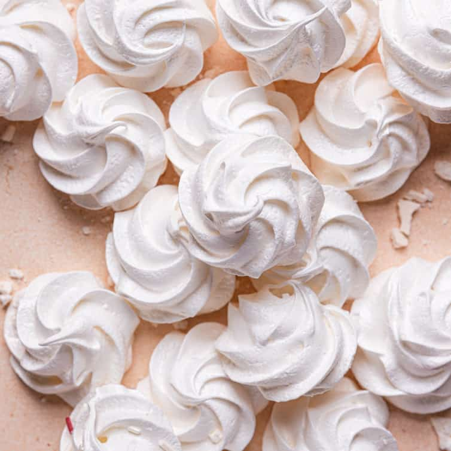

Meringue

Ingredients
- 4 Large Egg Whites
- 115g Caster Sugar
- 115g Icing Sugar
Method
- Heat the oven to 110°C.
- Line 2 baking sheets with non-stick liner.
- Tip 4 large egg whites into a large clean mixing bowl. Beat them on medium speed with an electric hand whisk until the mixture resembles a fluffy cloud and stands up in stiff peaks when the blades are lifted.
- Turn the speed up and add the caster sugar, a dessertspoonful at a time. Continue beating for 3-4 seconds between each addition. It's important to add the sugar slowly at this stage as it helps prevent the meringue from weeping later. The mixture should be thick and glossy.
- Sift one third of the 115g icing sugar over the mixture, then gently fold it in with a big metal spoon or rubber spatula. Continue to sift and fold in the remaining icing sugar a third at a time. The mixture should not look smooth and billowy.
- Scoop up a heaped dessertspoonful of the mixture. Ease it on to the baking sheet to make and oval shape.
- Bake for 1.5-1.75 hours until the meringues are a pale coffee colour.
- Leave to cool on the trays or a cooling rack.